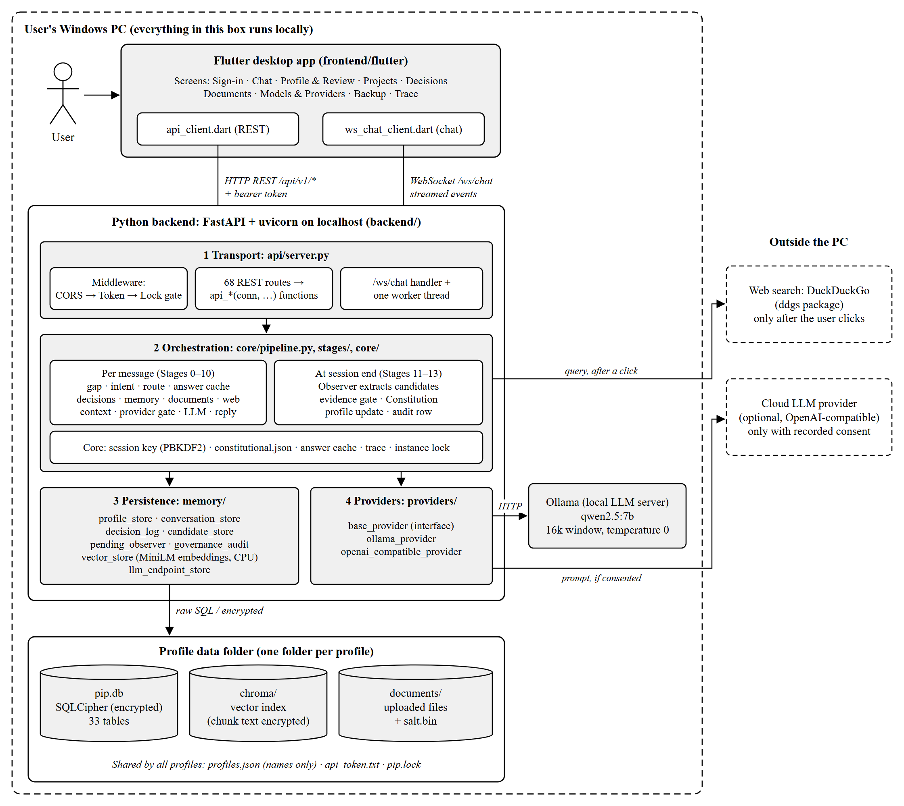

<!doctype html>
<html><head><meta charset="utf-8"><title>Chapter 3: Methodology (draft)</title>
<style>
  body { font-family: "Times New Roman", serif; font-size: 12pt; line-height: 2; margin: 1in 1in 1in 1.5in;
         background: #fff; color: #000; text-align: left; }
  h1 { font-size: 12pt; font-weight: bold; text-align: center; margin: 0 0 24pt 0; page-break-before: always; }
  h1:first-of-type { page-break-before: auto; }
  h2 { font-size: 12pt; font-weight: bold; margin: 24pt 0 12pt 0; }
  h3 { font-size: 12pt; font-weight: bold; margin: 18pt 0 12pt 0; }
  p { margin: 0 0 12pt 0; }
  ol { margin: 0 0 12pt 0; padding-left: 0.4in; }
  li { margin: 0 0 6pt 0; }
  p.cap { margin: 12pt 0 6pt 0; }
  table { border-collapse: collapse; width: 100%; line-height: 1.3; font-size: 11pt; margin-bottom: 12pt; }
  th, td { border: 1px solid #000; padding: 4px 6px; vertical-align: top; text-align: left; }
  th { background: #d9d9d9; }
  .check { color: #777; font-style: italic; }
  p.fig { margin: 12pt 0 0 0; text-align: center; line-height: 1; }
  p.fig img { max-width: 100%; }
  p.figcap { margin: 6pt 0 18pt 0; text-align: center; }
  pre { font-family: Consolas, "Courier New", monospace; font-size: 9.5pt; line-height: 1.25; white-space: pre-wrap;
        border: 1px solid #000; background: #f5f5f5; padding: 6pt 8pt; margin: 0 0 12pt 0; }
</style></head><body>
<h1>CHAPTER 3: METHODOLOGY</h1>
<h2>3.1 RESEARCH AND DEVELOPMENT METHOD</h2>
<p>PIP was built with an incremental development model, followed by an evidence-first reliability phase. In the incremental part, the system was built in numbered phases, each adding one part of the design, several of them ending with a tagged version and its tests. The design was kept in a separate design reference, whose architecture decision records were written early, in Phase 2. Table 3.1 lists the phases.</p>
<p class="cap"><b>Table 3.1: Development phases of PIP</b></p>
<table><tr><th>Phase</th><th>Dates (2026)</th><th>What was built</th><th>Tests at the end</th></tr>
<tr><td>0</td><td>3 July</td><td>Configuration, database schema and core components</td><td>–</td></tr>
<tr><td>1</td><td>4 July</td><td>The Constitution and its enforcer</td><td>–</td></tr>
<tr><td>2</td><td>5 July</td><td>Architecture decision records in the design reference</td><td>–</td></tr>
<tr><td>3</td><td>9 July</td><td>The provider layer and the consent gate</td><td>81 passed (version 0.3)</td></tr>
<tr><td>4</td><td>11 July</td><td>The gap detector and the session snapshot</td><td>97 passed (version 0.4)</td></tr>
<tr><td>5</td><td>16 August</td><td>Stage 12, the validation layer, and the corrected-write path</td><td>121 passed (version 0.5)</td></tr>
<tr><td>6</td><td>16–17 August</td><td>Document storage, the vector index and Stage 5 retrieval</td><td>–</td></tr>
<tr><td>7</td><td>17 August</td><td>Stage 11, the Observer, and evidence reinforcement across sessions</td><td>–</td></tr>
<tr><td>8</td><td>17–18 August</td><td>The remaining stages of Stages 1–10, the chat WebSocket and the Flutter client</td><td>–</td></tr>
<tr><td>Reliability</td><td>26 September to October</td><td>Each promise tested and each defect fixed test-first; a few authorised additions the evaluation needed (the audit log, one record per chat); the evaluations of Chapter 6</td><td>1,889 backend and 372 Flutter tests passed</td></tr>
</table>
<p>By September the system worked, but its most costly faults had been silent ones: encryption that was implemented but at first never given a key, a recovery path that was never called, and evidence that was collected but never checked. On 26 September 2026 the project therefore adopted a reliability freeze. Features were frozen: from then on, code changed only to fix a broken promise or, with explicit authorisation, to add something the evaluation needed, such as the audit log. Every change followed the same four rules:</p>
<ol><li>Decide before building. Write the promise first, as one sentence saying what the change guarantees; name the mechanism that enforces it; and name what &quot;broken&quot; would look like from outside, such as a database row, a network request or a file on disk.</li><li>Test first. Write the test before the fix and run it against the current code; it may already pass, which saves a change. The test checks outcomes, such as what is stored or sent, not the value a function returns.</li><li>Break it once by hand. Weaken the guard on purpose, confirm that the test fails, and restore the guard. A test that has never been seen to fail proves nothing.</li><li>Make the smallest change that passes, and commit each promise separately, with its test and a log entry.</li></ol>
<p>Each finding was classified in one of four ways: a mechanism that exists but is not connected to the real path; state that is missing, so the guarantee cannot be checked; a guarantee already enforced, which needs only its test; or a claim that is stronger than the mechanism, which is corrected by narrowing the claim. Evidence was ranked as well: a deterministic test on the real code path that checks the stored result, an observed network call, or a break-it result counts as strong evidence, while comments, documentation and function names do not count as evidence on their own.</p>
<p>The evaluations in Chapter 6 follow the same idea. The rule for judging each evaluation was written down before it was run; each run used a clean copy of the code taken from one commit; and each result file records the commit, the language model&#x27;s exact version, the Ollama version and the version of the Constitution, so that every number in this report can be traced to the code that produced it. The whole project is kept in Git (329 commits by 22 October 2026), and a Git hook enforces the main architecture rule described in Section 3.5.</p>
<h2>3.2 SYSTEM REQUIREMENT SPECIFICATION</h2>
<h3>3.2.1 Functional Requirements</h3>
<p>Table 3.2 lists the functional requirements, each with the part of the system that provides it.</p>
<p class="cap"><b>Table 3.2: Functional requirements</b></p>
<table><tr><th>ID</th><th>Requirement</th><th>Provided by</th></tr>
<tr><td>FR‑</td><td>The user can create a profile protected by a password, sign in, sign out, switch profile, rename it, change its password and delete it (deleting asks for the password again).</td><td>Sign-in screen; /auth routes</td></tr>
<tr><td>FR‑</td><td>The user can chat with the assistant; the answer is streamed word by word, the steps the assistant takes are shown, and an answer can be stopped.</td><td>Chat screen; /ws/chat; Stages 0–10</td></tr>
<tr><td>FR‑</td><td>The assistant answers using what it knows about the user, their projects and decisions, and their documents.</td><td>Stages 3–7</td></tr>
<tr><td>FR‑</td><td>At the end of a conversation the assistant learns facts about the user (skills, preferences, goals, projects, topics, preferred style) through the evidence gate and the Constitution, and keeps a record of where the chat left off.</td><td>Stages 11–13</td></tr>
<tr><td>FR‑</td><td>The user can confirm or dismiss each fact the assistant asks about, and see, correct or delete what it has stored.</td><td>Review and Profile screens</td></tr>
<tr><td>FR‑</td><td>The user can create projects and decisions, change a decision&#x27;s state, and accept or dismiss decisions the assistant proposes.</td><td>Projects and Decisions screens</td></tr>
<tr><td>FR‑</td><td>The user can upload documents, search them, and delete them; deleting removes the file and its stored copy.</td><td>Documents screen; /rag routes</td></tr>
<tr><td>FR‑</td><td>When a message could use the web, the assistant offers a search showing the exact query, and searches only after the user clicks.</td><td>Stage 6; chat screen</td></tr>
<tr><td>FR‑</td><td>The user can list, download, delete and select local models, and grant or revoke consent, for a chosen scope, for each outside provider: web search, and a cloud model if one is configured.</td><td>Model and Providers screens</td></tr>
<tr><td>FR‑</td><td>The user can back up a profile to one encrypted file, restore it, and import a backup into a new installation.</td><td>Backup screen; export and restore scripts</td></tr>
<tr><td>FR‑</td><td>The user can read, correct or clear each chat&#x27;s record.</td><td>Chat record dialog</td></tr>
<tr><td>FR‑</td><td>The user can see the trace of each message: which stages ran and how long each took.</td><td>Trace screen</td></tr>
</table>
<h3>3.2.2 Non-Functional Requirements</h3>
<p>The non-functional requirements are mainly the nine promises of the project. Each is checked by its own tests (Chapter 6). Table 3.3 groups them with the remaining requirements.</p>
<p class="cap"><b>Table 3.3: Non-functional requirements</b></p>
<table><tr><th>Area</th><th>Requirement</th><th>How it is checked</th></tr>
<tr><td>Privacy</td><td>Nothing leaves the computer without the user&#x27;s recorded consent for that service and purpose; no consent is preselected (Promise 6). The Observer runs only on a model recorded as local (Promise 5).</td><td>Tests that count what reaches a stand-in server</td></tr>
<tr><td>Security</td><td>Each profile&#x27;s data is encrypted at rest with a key derived from its password (Promise 7). Nothing derived from one profile is served to another (Promise 8).</td><td>Tests on the stored files and through the real routes</td></tr>
<tr><td>Correct learning</td><td>The Observer writes only through the checks (Promise 1), never changes the user&#x27;s name, language or time zone (Promise 2), writes sensitive facts only after confirmation (Promise 3), and stores only what the user&#x27;s words support (Promise 4).</td><td>Tests on the database state; a blind review of the evidence gate</td></tr>
<tr><td>Correct answers</td><td>An answer about the user reflects the record as it is when asked (Promise 9).</td><td>Tests on the prompt the model receives</td></tr>
<tr><td>Auditability</td><td>Every learning decision leaves one row in an append-only audit log.</td><td>Tests that the log cannot be changed or deleted</td></tr>
<tr><td>Reliability</td><td>Every chat turn ends with an answer or an error, and a failed write is rolled back.</td><td>Tests through the chat WebSocket</td></tr>
<tr><td>Performance</td><td>The first word of an answer appears within about half a second on the test computer, and the model with its 16,384-token window fits in 8 GB of graphics memory.</td><td>Speed measurement (Chapter 6)</td></tr>
<tr><td>Usability</td><td>Readable contrast, named controls, a minimum window size, and a minimum password length.</td><td>Flutter widget tests</td></tr>
<tr><td>Maintainability</td><td>One test file per module, and an import rule enforced by a Git hook.</td><td>The test suites and the hook</td></tr>
</table>
<h2>3.3 TOOLS AND TECHNOLOGIES USED</h2>
<p>Table 3.4 lists the main tools and the versions used for the final measurements.</p>
<p class="cap"><b>Table 3.4: Tools and technologies</b></p>
<table><tr><th>Tool</th><th>Version</th><th>Used for</th></tr>
<tr><td>Python</td><td>3.12.10</td><td>The backend</td></tr>
<tr><td>FastAPI, Starlette, Uvicorn</td><td>0.141.1, 1.6.0, 0.52.3</td><td>The REST API, the chat WebSocket and the web server</td></tr>
<tr><td>SQLCipher (sqlcipher3)</td><td>0.6.2</td><td>The encrypted database, one per profile</td></tr>
<tr><td>cryptography</td><td>50.0.0</td><td>Encrypting the document index&#x27;s text, and keyed hashes (HMAC)</td></tr>
<tr><td>ChromaDB</td><td>1.5.9</td><td>The vector index for document search</td></tr>
<tr><td>sentence-transformers, all-MiniLM-L6-v2</td><td>5.7.0</td><td>Turning text into vectors, on the processor</td></tr>
<tr><td>pypdf</td><td>6.16.1</td><td>Reading uploaded PDF documents</td></tr>
<tr><td>ddgs</td><td>9.15.0</td><td>DuckDuckGo web search, only after the user&#x27;s click</td></tr>
<tr><td>Ollama</td><td>0.40.3</td><td>Running the language model locally</td></tr>
<tr><td>qwen2.5:7b (Q4_K_M)</td><td>–</td><td>The language model</td></tr>
<tr><td>Flutter (Dart)</td><td>3.44.2</td><td>The Windows desktop application</td></tr>
<tr><td>http, web_socket_channel, file_picker</td><td>1.2, 3.0, 12.0</td><td>The app&#x27;s REST calls, chat connection and file chooser</td></tr>
<tr><td>pytest (with pytest-timeout, pytest-asyncio), flutter_test</td><td>9.1.1</td><td>Backend and app tests</td></tr>
<tr><td>Git and GitHub</td><td>–</td><td>Version control and backup</td></tr>
<tr><td>PowerShell, Inno Setup</td><td>–</td><td>Launch, backup and restore scripts; the Windows installer</td></tr>
</table>
<p>Python was chosen for the backend because the libraries for language models, vector search and encryption are mature in Python. FastAPI provides both the REST routes and the WebSocket that streams answers. SQLCipher encrypts the whole database file with a key derived from the user&#x27;s password, so the data is unreadable without it. Ollama runs the language model as a local server, so no conversation needs to leave the computer. Flutter produces a native Windows application from one code base, and qwen2.5:7b was chosen because it fits in the test computer&#x27;s graphics memory with a 16,384-token window and because every measured result in this report was taken on it.</p>
<h2>3.4 FEASIBILITY STUDY</h2>
<p>Table 3.5 summarises the feasibility of the project.</p>
<p class="cap"><b>Table 3.5: Feasibility study</b></p>
<table><tr><th>Type</th><th>Finding</th></tr>
<tr><td>Technical</td><td>The system runs on one laptop: an Intel Core i9-14900HX, 16 GB of memory and an NVIDIA GeForce RTX 4060 Laptop GPU with 8 GB. The language model with its 16,384-token window occupies about 5.1 GiB of graphics memory, and 6.6–6.8 GB of the card is in use with a browser open. The embedding model runs on the processor, leaving the graphics card to the language model.</td></tr>
<tr><td>Economic</td><td>Every tool and both models are free to use. There is no cloud cost and no charge per request, because the model runs locally; the only cost is the computer, which the user already owns.</td></tr>
<tr><td>Operational</td><td>PIP is used like any desktop application: it is started from a shortcut, the user signs in to a profile, and once the language model has been downloaded it works without an internet connection, except for web search and an optional cloud model. A Windows installer was prepared with Inno Setup and does not need administrator rights.</td></tr>
<tr><td>Schedule</td><td>The working system was built in about seven weeks (Phases 0–8, July to August 2026), leaving September and October for testing, fixing and evaluation within the semester.</td></tr>
</table>
<h2>3.5 SYSTEM ARCHITECTURE</h2>
<p>Figure 3.1 shows the architecture of PIP. Everything except web search and an optional cloud model runs on the user&#x27;s computer.</p>
<p class="fig"></p>
<p class="figcap"><b>Figure 3.1:</b> System architecture of PIP</p>
<p>The user works in the Flutter desktop application. It has no logic of its own: it sends each request to the Python backend on the same computer, over HTTP for ordinary requests (/api/v1/...) and over one WebSocket (/ws/chat) for chat, where the answer is streamed back word by word. Every request carries a bearer token that the backend writes to a file at start-up, and the backend listens only on the computer&#x27;s own address, 127.0.0.1.</p>
<p>The backend has four layers.</p>
<ol><li>Transport (backend/api/server.py) receives requests. Three middleware layers check them in order: the allowed origin, the bearer token, and whether a profile is signed in. Each of the 68 REST routes calls a plain function that does the work, and each chat connection gets its own worker thread, because an encrypted database connection must stay on the thread that opened it.</li><li>Orchestration (backend/core/pipeline.py and backend/stages/) runs each chat message through Stages 0–10: measuring the time since the last session, classifying the message, routing it, checking the answer cache, looking up decisions, memory and documents, an optional web search, assembling the prompt, checking consent, streaming the answer from the model, and delivering it. At the end of a session, Stages 11–13 run separately: the Observer proposes what was learned, the evidence gate and the Constitution decide, and the result is written, queued as a question for the user, or rejected, with an audit row for each decision.</li><li>Persistence (backend/memory/) has one module per kind of stored data, each writing plain SQL to the profile&#x27;s encrypted database, and a vector index for documents whose stored text is also encrypted.</li><li>Providers (backend/providers/) connect to language models through one interface: Ollama, reached at 127.0.0.1, and optionally a cloud model with an OpenAI-compatible interface. The backend uses such a cloud model only with consent; in this version it is configured outside the app, which offers no screen for adding one.</li></ol>
<p>A Git hook enforces the main rule between these layers: no module in the transport layer or in the stages may import the database, vector-index or Ollama libraries directly; they must go through the persistence and provider layers.</p>
<p>Each profile has its own folder holding its encrypted database, its vector index, its uploaded documents and the salt used to derive its key. A few files are shared by all profiles: the list of profiles (names only), the bearer token, and a lock file that stops two copies of PIP running at once. Chapter 4 shows the design of each part in detail.</p>
</body></html>
